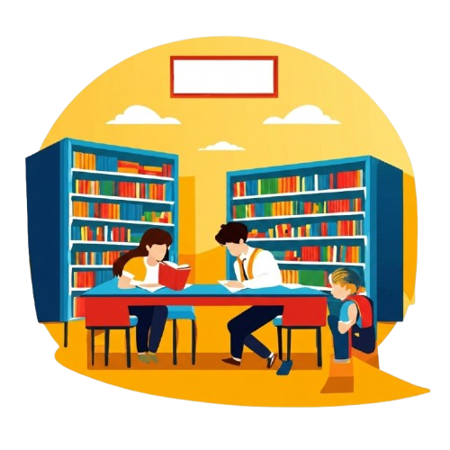
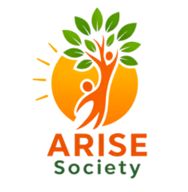

Welcome to Jalaun Community Library
The Jalaun Community Library (JCL) is a people-centric initiative by Arise Society to promote education and community development in Orai. Designed as an open learning space, we bridge the gap between rural and urban education opportunities.
Under the Yuva Setu project, JCL serves as a hub for workshops, digital access, and skill development, making it a true Knowledge & Skill Centre.
⏰ Open from 9AM to 5PM
Join NowLibrary Facilities
-
📚
Rich Book Collection
-
💻
Computer Classes
-
🪑
20+ Study Seats
-
🌐
High-speed WiFi
-
✨
Peaceful Environment

A Place to Learn & Grow
Jalaun Community Library is a welcoming space where students can study, explore books, and improve their skills in a peaceful environment.

Powered by ARISE Society
Jalaun Community Library is an initiative organised by ARISE Society
to promote education, learning, and community development in Orai.
The library provides a peaceful environment where students can study,
access books, use digital resources, and improve their skills.
Through this initiative, ARISE Society aims to connect young learners
with knowledge, opportunities, and a brighter future.